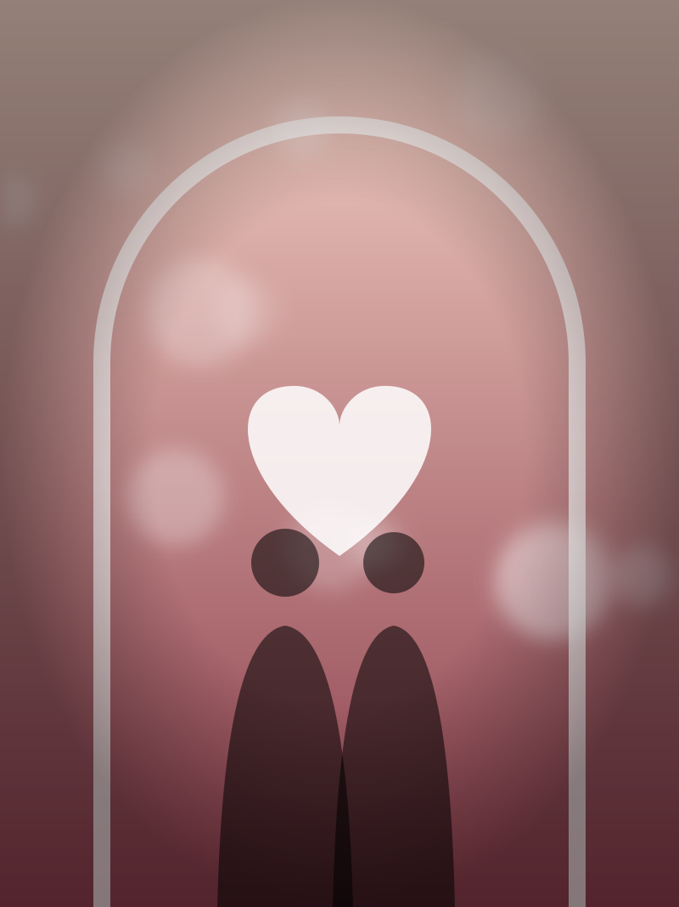
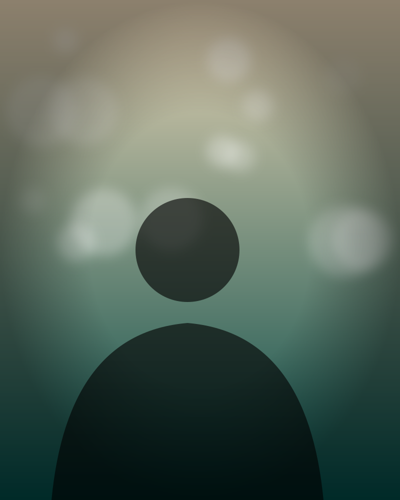
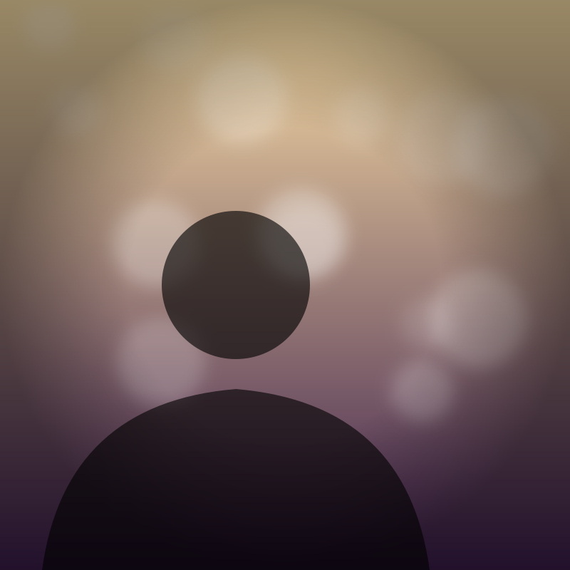
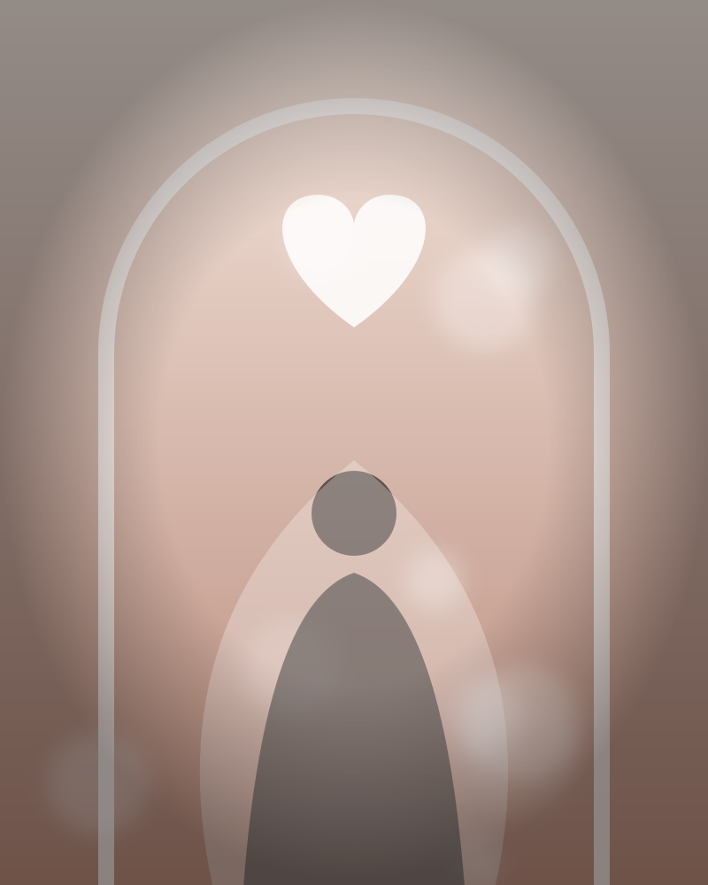
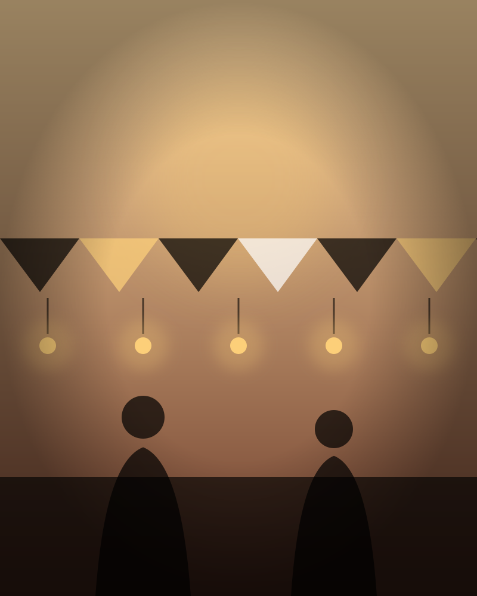
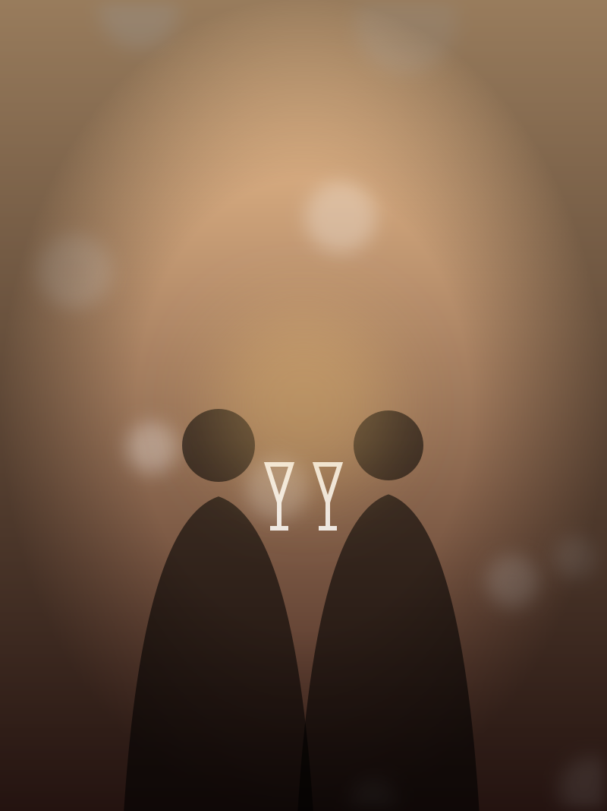
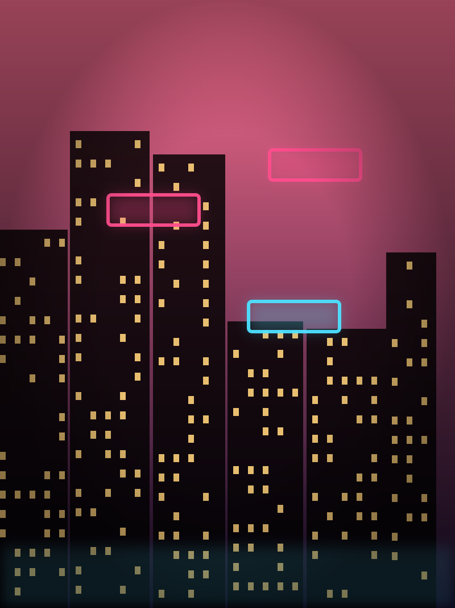
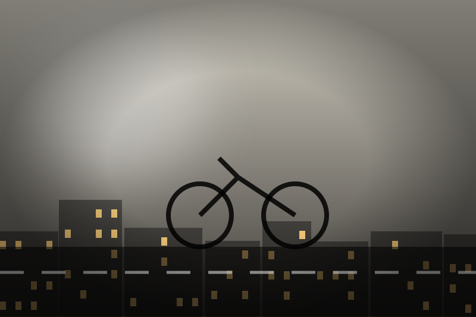

The gallery
Frames from recent seasons. Tap any image to see it larger.
- 41frames
- 4collections
- 100%natural light









Four ways of seeing
Browse the full set above, or jump straight to the style that speaks to you. Use the filters at the top of the page.
Portraits
Honest, unposed portraits in soft natural light.
8 frames
Weddings
The vows, the laughter and every quiet moment between.
11 frames
Landscapes
Mountains, coasts and skies, photographed at their best hour.
12 frames
Street
City life, caught in passing: markets, rain and neon.
10 frames
From thousands of shots to a few favourites
Every gallery goes through the same careful process, so you only see the frames worth keeping.
- Shoot generously, so no moment is missed
- Cull gently, keeping the frames with feeling
- Edit by hand for warm, true-to-life colour
- Check every image at full size before delivery
Delivered beautifully, shared easily
Private online gallery
A password-protected gallery you can share with family and friends.
Favourites & downloads
Mark favourites, download full-resolution files and order prints in a few taps.
Preview in 48 hours
A first look at your best frames while the day is still fresh.
Hang a moment on your wall.
Museum‑grade prints and handbound albums, made to order.
Fine-art prints
Archival paper with rich, lasting colour, in sizes from desk to feature wall.
Canvas & framed
Ready-to-hang pieces, framed and finished to suit your space.
Handbound albums
Layflat pages that tell the whole day, from first look to last dance.
Love what you see? Let’s create yours.
Tell me about your day and I’ll check my dates.